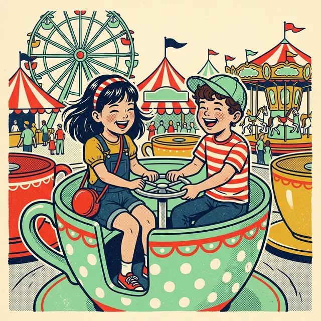
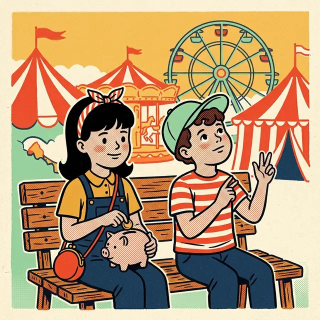

課前暖身漫畫：存 7.5 天？
小晴在售票亭看到遊園年票 \(900\) 元，她的小豬撲滿裡已經有 \(300\) 元，打算之後每天再存 \(80\) 元。阿哲列出不等式一算，得到「\(x \ge 7.5\)」——難道要存 \(7.5\) 天？這一節先學怎麼解出這樣的不等式，最後再回來回答：天數只能是整數，至少要存幾天？
重點 1：解不等式與加減規則——同加同減，方向不變
重點整理與敘述
- 解一元一次不等式：找出一個不等式所有解的過程。\(x \gt 3\) 一眼就看得出哪些數是解；\(x + 6 \gt 5\) 看不出來，就要把它整理成「\(x \gt\) 某個數」的樣子。
- 加減規則：若 \(a \gt b\)，則 \(a + c \gt b + c\)，而且 \(a - c \gt b - c\)。兩邊同加或同減一個數，不等號的方向不變。
- 在數線上看：\(a \gt b\) 表示 \(a\) 在 \(b\) 的右邊。兩個點一起往右（或往左）移動同樣的格數，\(a\) 還是在 \(b\) 的右邊。
| 原本 | 兩邊同時 | 結果 | 方向 |
|---|---|---|---|
| \(7 \gt 2\) | \(+\,3\) | \(10 \gt 5\) | 不變 |
| \(-1 \lt 4\) | \(-\,5\) | \(-6 \lt -1\) | 不變 |
| \(x - 2 \le 5\) | \(+\,2\) | \(x \le 7\) | 不變 |
- 用加減規則解不等式：兩邊同減 \(6\)，把 \(x\) 旁邊的 \(+6\) 消掉： \[\begin{aligned} & x + 6 \gt 5 \\ & x + 6 - 6 \gt 5 - 6 \\ & x \gt -1 \end{aligned}\] 所有比 \(-1\) 大的數都是解。
- 和方程式的差別：\(x + 6 = 5\) 的解只有 \(x = -1\) 一個數；\(x + 6 \gt 5\) 的解是一整段，而且不包含 \(-1\) 本身。
視覺互動探索：纜車平移台
「兩個數」模式：拉動兩個數與移動的格數，看兩點一起平移後誰在右邊有沒有改變。「解不等式」模式：看兩邊同加或同減之後，怎麼得到 \(x\) 的範圍：
形成性評量 (加減規則)
Q1. 已知 \(a \lt b\)，下列何者一定正確？
解析：答案為 B。\(a \lt b\) 的兩邊同加 \(3\)，不等號的方向不變，得到 \(a + 3 \lt b + 3\)。
A 錯：兩邊同減 \(5\) 方向也不變，應該是 \(a - 5 \lt b - 5\)。
C 錯：同減 \(2\) 後是 \(a - 2 \lt b - 2\)，\(a - 2\) 比 \(b - 2\) 小，「大於或等於」不成立。
D 錯：\(a\) 與 \(b\) 不一樣大，同加 \(7\) 之後仍然不一樣大。
Q2. 解一元一次不等式 \(x + 9 \ge 4\)，結果為何？
解析：答案為 C。兩邊同減 \(9\)，方向不變：
\[\begin{aligned} & x + 9 \ge 4 \\ & x + 9 - 9 \ge 4 - 9 \\ & x \ge -5 \end{aligned}\]
A 錯：要消掉 \(+9\) 應該同減 \(9\)，這是同加了 \(9\)。
B 錯：同加同減不會改變不等號的方向。
D 錯：\(4 - 9 = -5\)，不是 \(5\)。
重點 2：同乘同除以正數——方向不變
重點整理與敘述
- 生活裡的例子：一支棉花糖比一包爆米花貴，那麼三支棉花糖也一定比三包爆米花貴，半支棉花糖也比半包爆米花貴。
- 乘除正數的規則：若 \(a \gt b\) 且 \(c \gt 0\)，則 \(ac \gt bc\)，而且 \(a \div c \gt b \div c\)。兩邊同乘或同除以正數，方向不變。
- 除以 \(c\) 就是乘以 \(\frac{1}{c}\)，所以只要記「乘以正數」這一條，除法跟著成立。
| 原本 | 兩邊同時 | 結果 | 方向 |
|---|---|---|---|
| \(8 \gt 3\) | \(\times\, 4\) | \(32 \gt 12\) | 不變 |
| \(-6 \lt -1\) | \(\times\, 2\) | \(-12 \lt -2\) | 不變 |
| \(0 \gt -5\) | \(\times\, 3\) | \(0 \gt -15\) | 不變 |
- 用來解不等式：\(4x \le 10\) 兩邊同除以 \(4\)，得 \(x \le \frac{5}{2}\)；\(\frac{1}{2}x \lt 7\) 兩邊同乘以 \(2\)，得 \(x \lt 14\)。
- 要看的是「乘除的那個數」，不是右邊的數：\(5x \gt -30\) 兩邊同除以正數 \(5\)，得 \(x \gt -6\)。右邊出現負數，方向照樣不變。
視覺互動探索：倍數放大鏡（正數）
拉動兩個數，再選一個正數讓兩邊同乘或同除。看虛線怎麼把上面的點送到下面，左右順序有沒有交換：
形成性評量 (乘除正數)
Q3. 下列哪一個推論是正確的？
解析：答案為 A。\(5x \gt -15\) 兩邊同除以正數 \(5\)，方向不變，得 \(x \gt -3\)。
B 錯：要消掉 \(\frac{1}{2}\) 應該同乘以 \(2\)，得 \(x \ge 8\)；這裡卻除以了 \(2\)。
C 錯：除以的是正數 \(7\)，方向不變，應該是 \(x \lt -3\)。右邊是負數不會讓不等號變號。
D 錯：要消掉係數 \(3\) 應該同除以 \(3\)，得 \(x \le \frac{7}{3}\)；這裡卻乘了 \(3\)。
Q4. 解一元一次不等式 \(\frac{3}{4}x \gt 9\)，結果為何？
解析：答案為 A。兩邊同乘以正數 \(\frac{4}{3}\)（也就是同除以 \(\frac{3}{4}\)），方向不變：
\[\begin{aligned} & \frac{3}{4}x \gt 9 \\ & x \gt 9 \times \frac{4}{3} \\ & x \gt 12 \end{aligned}\]
B 錯：\(\frac{27}{4} = 9 \times \frac{3}{4}\)，是乘了 \(\frac{3}{4}\)，應該乘它的倒數。
C 錯：乘的是正數，方向不變。
D 錯：只除以分子 \(3\)，忘了分母 \(4\)。
重點 3：同乘同除以負數——方向要反過來
重點整理與敘述
- 先想一個例子：\(8 \gt 3\)。但「欠 \(8\) 元」比「欠 \(3\) 元」糟，所以 \(-8 \lt -3\)——兩邊同乘以 \(-1\)，大小關係反過來了。
- 乘除負數的規則：若 \(a \gt b\) 且 \(c \lt 0\)，則 \(ac \lt bc\)，而且 \(a \div c \lt b \div c\)。兩邊同乘或同除以負數，不等號的方向要改變。
- 在數線上看：乘以負數會把每個點翻到 \(0\) 的另一邊，原本在右邊的點翻過去之後變成在左邊，左右順序整個顛倒。
| 原本 | 同乘以 \(-3\) | 方向 |
|---|---|---|
| \(8 \gt 3\) | \(-24 \lt -9\) | 改變 |
| \(-6 \lt -1\) | \(18 \gt 3\) | 改變 |
| \(0 \gt -5\) | \(0 \lt 15\) | 改變 |
- 用來解不等式：\(-x \gt 4\) 兩邊同乘以 \(-1\)，「\(\gt\)」變「\(\lt\)」，得 \(x \lt -4\)。\(-4x \le 10\) 兩邊同除以 \(-4\)，「\(\le\)」變「\(\ge\)」，得 \(x \ge -\frac{5}{2}\)。
- 含等號的不等號也照樣反過來：\(\ge\) 變 \(\le\)、\(\le\) 變 \(\ge\)，等號留著。
- 判斷要不要變號，只看乘除的那個數：它是負數才變號。加減一個負數不變號，右邊是負數也不變號。
視覺互動探索：倍數放大鏡（負數）
和重點 2 同一台放大鏡，這次選的是負數。看虛線是不是交叉了——交叉就代表左右順序交換，不等號要反過來：
形成性評量 (乘除負數)
Q5. 已知 \(m \lt n\)，下列何者一定正確？
解析：答案為 D。\(m \lt n\) 的兩邊同除以負數 \(-3\)，不等號要反過來，「\(\lt\)」變「\(\gt\)」，得 \(m \div (-3) \gt n \div (-3)\)。
A 錯：同乘以 \(-2\) 要變號，應該是 \(-2m \gt -2n\)。
B 錯：同乘以 \(-1\) 要變號，應該是 \(-m \gt -n\)。
C 錯：\(m\) 與 \(n\) 不一樣大，乘以 \(-5\) 之後也不會相等。
Q6. 解一元一次不等式 \(-6x \ge 15\)，結果為何？
解析：答案為 D。兩邊同除以負數 \(-6\)，「\(\ge\)」變「\(\le\)」：
\[\begin{aligned} & -6x \ge 15 \\ & x \le 15 \div (-6) \\ & x \le -\frac{5}{2} \end{aligned}\]
A 錯：除以負數卻忘了變號。
B 錯：變號對了，但算成 \(6 \div 15\)，被除數與除數顛倒。
C 錯：\(15 \div (-6)\) 是負數，商的正負號算錯了。
重點 4：移項法則——×、÷ 負數移過去要變號
重點整理與敘述
- 移項法則：把某一項移到不等號的另一邊，加變減、減變加、乘變除、除變乘。它其實是「兩邊同加、同減、同乘、同除」省略中間步驟的寫法。
- 唯一和方程式不同的地方：乘或除的那個數是負數時，移過去之後不等號要反過來。
- 解題順序：① 把常數項移到另一邊；② 兩邊各自化簡；③ 把 \(x\) 的係數移過去（係數是負數就變號）。
| 移項前 | 移項後 | 不等號 |
|---|---|---|
| \(x + 5 \lt 1\) | \(x \lt 1 - 5\) | 不變 |
| \(4x \ge 8\) | \(x \ge 8 \div 4\) | 不變 |
| \(-3x \gt 6\) | \(x \lt 6 \div (-3)\) | 反過來 |
- 係數是正數： \[\begin{aligned} & 3x - 7 \gt 8 \\ & 3x \gt 8 + 7 \\ & 3x \gt 15 \\ & x \gt 5 \end{aligned}\]
- 係數是負數：最後一步除以 \(-2\)，「\(\le\)」變「\(\ge\)」： \[\begin{aligned} & 9 - 2x \le 13 \\ & -2x \le 13 - 9 \\ & -2x \le 4 \\ & x \ge -2 \end{aligned}\]
視覺互動探索：移項工作台
調整 \(ax + b\) 與右邊的數、選一個不等號，看每一項怎麼移過去。特別把 \(a\) 調成負數，注意最後一步的不等號：
形成性評量 (移項法則)
Q7. 解一元一次不等式 \(-7x + 12 \lt 40\)，結果為何？
解析：答案為 B。\(+12\) 移過去變 \(-12\)；係數 \(-7\) 是負數，移過去要變號：
\[\begin{aligned} & -7x + 12 \lt 40 \\ & -7x \lt 40 - 12 \\ & -7x \lt 28 \\ & x \gt -4 \end{aligned}\]
A 錯：除以 \(-7\) 卻忘了把「\(\lt\)」改成「\(\gt\)」。
C 錯：\(28 \div (-7) = -4\)，商的正負號算錯了。
D 錯：\(+12\) 移過去沒有變號，算成 \(40 + 12 = 52\)。
Q8. 小芸用移項法則解 \(13 - 4x \ge 21\)，過程如下。她從第幾步開始出錯？ \[\begin{aligned} &① \ -4x \ge 21 - 13 \\ &② \ -4x \ge 8 \\ &③ \ x \ge 8 \div (-4) \\ &④ \ x \ge -2 \end{aligned}\]
解析：答案為 C。①、② 都對：\(13\) 移過去變 \(-13\)，\(21 - 13 = 8\)。第 ③ 步把 \(\times (-4)\) 移過去變成 \(\div (-4)\)，除的是負數，「\(\ge\)」應該改成「\(\le\)」，她忘了變號。正確答案是 \(x \le -2\)。
D 不選：第 ④ 步的 \(8 \div (-4) = -2\) 算得沒錯，只是沿用了第 ③ 步錯的不等號；題目問的是從哪一步開始出錯。
重點 5：兩邊都有 \(x\)——移到哪一邊都可以
重點整理與敘述
- 先分邊：把含 \(x\) 的項移到同一邊、常數項移到另一邊，化簡之後再處理 \(x\) 的係數。
- \(x\) 移到左邊或右邊都對，只是過程不一樣。以 \(2x + 1 \gt 5x - 8\) 為例：
- \(x\) 移到左邊：最後除以 \(-3\)，要變號 \[\begin{aligned} & 2x - 5x \gt -8 - 1 \\ & -3x \gt -9 \\ & x \lt 3 \end{aligned}\]
- \(x\) 移到右邊：最後除以 \(3\)，不必變號 \[\begin{aligned} & 1 + 8 \gt 5x - 2x \\ & 9 \gt 3x \\ & 3 \gt x \end{aligned}\]
- \(3 \gt x\) 就是 \(x \lt 3\)：開口永遠朝向大的那一邊，把兩邊對調時不等號跟著轉向。畫在數線上是從 \(3\) 往左，不要被「\(\gt\)」騙去往右畫。
- 小技巧：把 \(x\) 移到係數比較大的那一邊，化簡後係數是正數，最後一步就不必變號。這只是比較好算，兩種做法都正確。
- 最常見的錯：化簡成 \(-3x \gt -9\) 之後，看到右邊也是負數，就以為「負負得正、不用變號」。要不要變號只看除的那個數。
視覺互動探索：左右搬家台
調整 \(px + q\) 與 \(rx + t\)，再切換「\(x\) 移到左邊」「\(x\) 移到右邊」。兩條路線一條可能要變號、一條不用，但最後的解一定一樣：
形成性評量 (兩邊都有 x)
Q9. 解一元一次不等式 \(3x - 11 \le 7x + 5\)，結果為何？
解析：答案為 C。把 \(x\) 移到左邊：
\[\begin{aligned} & 3x - 7x \le 5 + 11 \\ & -4x \le 16 \\ & x \ge -4 \end{aligned}\]
除以負數 \(-4\)，「\(\le\)」變「\(\ge\)」。也可以把 \(x\) 移到右邊：\(-11 - 5 \le 7x - 3x\)，\(-16 \le 4x\)，\(-4 \le x\)，結果相同。
A 錯：除以 \(-4\) 忘了變號。
B 錯：\(-11\) 移過去沒有變號，算成 \(5 - 11 = -6\)，得 \(-4x \le -6\)。
D 錯：\(16 \div (-4) = -4\)，商的正負號算錯了。
Q10. 小安解 \(-3x + 8 \gt 2x - 12\) 時，把 \(x\) 移到右邊，寫成 \(8 + 12 \gt 2x + 3x\)，接著得到 \(20 \gt 5x\)，最後寫 \(4 \gt x\)。下列敘述何者正確？
解析：答案為 C。\(-3x\) 移到右邊變 \(+3x\)、\(-12\) 移到左邊變 \(+12\)，都對；\(20 \gt 5x\) 兩邊同除以正數 \(5\)，不變號，得 \(4 \gt x\)，也就是 \(x \lt 4\)。
A 錯：\(4 \gt x\) 表示 \(x\) 比 \(4\) 小；兩邊對調時開口要跟著轉，是 \(x \lt 4\)。
B 錯：除以的是正數，不必變號。
D 錯：移到左邊是 \(-5x \gt -20\)，除以 \(-5\) 變號得 \(x \lt 4\)，兩種做法的解相同。
重點 6：先去括號——每一項都要乘到
重點整理與敘述
- 先用分配律把括號乘開，變成沒有括號的式子，再照重點 5 移項。
- 括號外的數要乘到括號裡的每一項：\(4(x - 2) = 4x - 8\)，不是 \(4x - 2\)。
- 括號前是負數，每一項都要變號：\(-2(x - 3) = -2x + 6\)。\(-2\) 乘 \(-3\) 是 \(+6\)，最容易寫成 \(-6\)。
| 括號 | 正確乘開 | 常見錯誤 |
|---|---|---|
| \(4(x - 2)\) | \(4x - 8\) | \(4x - 2\) |
| \(-2(x - 3)\) | \(-2x + 6\) | \(-2x - 6\) |
| \(-(3 - x)\) | \(-3 + x\) | \(-3 - x\) |
- 完整的例子： \[\begin{aligned} & 5 - 2(x - 3) \ge 3x + 1 \\ & 5 - 2x + 6 \ge 3x + 1 \\ & -2x - 3x \ge 1 - 11 \\ & -5x \ge -10 \\ & x \le 2 \end{aligned}\] 最後除以 \(-5\)，「\(\ge\)」變「\(\le\)」。
- 去完括號才輪到不等號的規則：分配律本身和不等號無關，乘開時不必變號；要不要變號，要等到最後除以 \(x\) 的係數時才判斷。
視覺互動探索：拆括號檢查站
調整 \(m(x + n)\) 與右邊的 \(px + q\)。切到「只乘第一項（錯）」，比較錯誤的解和正確的解差在哪裡，再看代入一個數檢查時誰才對：
形成性評量 (去括號)
Q11. 解一元一次不等式 \(6(2 - x) \lt 3x - 6\)，結果為何？
解析：答案為 A。
\[\begin{aligned} & 6(2 - x) \lt 3x - 6 \\ & 12 - 6x \lt 3x - 6 \\ & -6x - 3x \lt -6 - 12 \\ & -9x \lt -18 \\ & x \gt 2 \end{aligned}\]
B 錯：除以 \(-9\) 忘了變號。
C 錯：把 \(6 \times (-x)\) 寫成 \(+6x\)，得 \(12 + 6x \lt 3x - 6\)。
D 錯：\(6\) 只乘了第一項，寫成 \(12 - x \lt 3x - 6\)。
Q12. 解一元一次不等式 \(-3(x - 5) \ge 21 - x\)，結果為何？
解析：答案為 D。\(-3\) 乘 \(-5\) 得 \(+15\)：
\[\begin{aligned} & -3x + 15 \ge 21 - x \\ & -3x + x \ge 21 - 15 \\ & -2x \ge 6 \\ & x \le -3 \end{aligned}\]
A 錯：除以 \(-2\) 忘了變號。
B 錯：\(-3\) 只乘了第一項，寫成 \(-3x - 5\)。
C 錯：\(-3 \times (-5)\) 算成 \(-15\)。
重點 7：先去分母，再把解畫在數線上
重點整理與敘述
- 兩邊同乘分母的最小公倍數，把分數全部消掉。最小公倍數一定是正數，所以這一步不必變號。
- 每一項都要乘，包括沒有分母的常數項；分子是兩項以上時要加括號再乘。
- 完整的例子：分母 \(2\) 與 \(3\) 的最小公倍數是 \(6\)。 \[\begin{aligned} & \frac{x + 1}{2} - 1 \le \frac{2x - 1}{3} \\ & 3(x + 1) - 6 \le 2(2x - 1) \\ & 3x - 3 \le 4x - 2 \\ & -x \le 1 \\ & x \ge -1 \end{aligned}\]
- 常見錯誤：常數項 \(-1\) 忘了乘 \(6\)，寫成 \(3(x + 1) - 1 \le 2(2x - 1)\)，會解出 \(x \ge 4\)——整段解都跑掉了。
- 解是分數時：先化成帶分數判斷位置。\(x \lt \frac{7}{3}\) 的 \(\frac{7}{3} = 2\frac{1}{3}\)，端點畫在 \(2\) 與 \(3\) 之間、比較靠近 \(2\) 的地方。

視覺互動探索：去分母畫解台
選兩個分母、調整分子與常數項 \(c\)，看同乘最小公倍數之後怎麼一路解到數線上。切到「常數項忘了乘（錯）」，看解會跑到哪裡：
形成性評量 (去分母與圖示)
Q13. 解一元一次不等式 \(\frac{2x - 1}{3} - 1 \gt \frac{x + 4}{2}\)，結果為何？
解析：答案為 C。兩邊同乘 \(6\)（正數，不變號），每一項都要乘：
\[\begin{aligned} & 2(2x - 1) - 6 \gt 3(x + 4) \\ & 4x - 2 - 6 \gt 3x + 12 \\ & 4x - 3x \gt 12 + 8 \\ & x \gt 20 \end{aligned}\]
A 錯：常數項 \(-1\) 忘了乘 \(6\)，寫成 \(4x - 2 - 1 \gt 3x + 12\)。
B 錯：分子沒有加括號，\(2 \times 2x - 1\) 只乘到 \(2x\)，寫成 \(4x - 1 - 6 \gt 3x + 12\)。
D 錯：同乘的 \(6\) 是正數，最後的係數 \(1\) 也是正數，都不必變號。
Q14. 不等式 \(\frac{x - 3}{4} \ge \frac{3x + 1}{6}\) 的解畫在數線上，下列描述何者正確？
解析：答案為 B。分母 \(4\) 與 \(6\) 的最小公倍數是 \(12\)：
\[\begin{aligned} & 3(x - 3) \ge 2(3x + 1) \\ & 3x - 9 \ge 6x + 2 \\ & -3x \ge 11 \\ & x \le -\frac{11}{3} \end{aligned}\]
\(-\frac{11}{3} = -3\frac{2}{3}\)，在 \(-4\) 與 \(-3\) 之間；有等號畫實心，小於或等於往左。
A 錯：\(\le\) 含等號，端點要實心。
C 錯：除以 \(-3\) 忘了變號，才會變成往右。
D 錯：\(11 \div (-3)\) 是負數，端點在 \(0\) 的左邊。
重點 8：答案要取整數——「至少」取最小、「最多」取最大
重點整理與敘述
- 應用問題的解是一整段範圍，天數、人數、個數卻只能是整數，還要回到情境挑出合理的答案。
- 「至少」取最小的整數，「最多」取最大的整數：解是 \(x \gt\) 或 \(x \ge\) 某數時，通常問「至少」；解是 \(x \lt\) 或 \(x \le\) 某數時，通常問「最多」。
- 端點是整數時，看有沒有等號：\(x \ge 8\) 的最小整數是 \(8\)；\(x \gt 8\) 不含 \(8\)，最小整數是 \(9\)。
| 解出來 | 題目問 | 答案 |
|---|---|---|
| \(x \gt 5.2\) | 至少 | \(6\) |
| \(x \ge 6\) | 至少 | \(6\) |
| \(x \gt 6\) | 至少 | \(7\) |
| \(x \le 12.6\) | 最多 | \(12\) |
| \(x \lt 12\) | 最多 | \(11\) |
- 不可以四捨五入：\(x \le 12.6\) 四捨五入是 \(13\)，但 \(13\) 比 \(12.6\) 大，根本不是解。
- 回到漫畫：小晴有 \(300\) 元，每天存 \(80\) 元，存 \(x\) 天後要足夠買 \(900\) 元的年票： \[\begin{aligned} & 300 + 80x \ge 900 \\ & 80x \ge 600 \\ & x \ge 7.5 \end{aligned}\] 天數是整數，大於或等於 \(7.5\) 的最小整數是 \(8\)，至少要存 \(8\) 天。

視覺互動探索：整數挑選器
選一個不等號、調整解的端點，看數線上哪些整數是解、題目問「至少」或「最多」時該挑哪一個，再和四捨五入的結果比一比：
形成性評量 (取整數)
Q15. 遊樂園的遊戲代幣一枚 \(35\) 元。阿哲帶了 \(500\) 元，先買一張 \(120\) 元的門票，剩下的錢最多還能買幾枚代幣？
解析：答案為 A。設買 \(x\) 枚代幣，總花費不能超過帶的錢：
\[\begin{aligned} & 120 + 35x \le 500 \\ & 35x \le 380 \\ & x \le \frac{76}{7} \end{aligned}\]
\(\frac{76}{7} = 10\frac{6}{7}\)，代幣枚數是整數，小於或等於 \(10\frac{6}{7}\) 的最大整數是 \(10\)。
B 錯：\(10\frac{6}{7}\) 四捨五入是 \(11\)，但買 \(11\) 枚要 \(120 + 385 = 505\) 元，錢不夠。
C 錯：忘了先扣掉 \(120\) 元的門票，算成 \(35x \le 500\)。
D 錯：\(120\) 移過去沒有變號，算成 \(35x \le 620\)。
Q16. 若 \(x\) 是整數，滿足 \(6x - 13 \gt 71\) 的 \(x\) 最小是多少？
解析：答案為 B。\(6x \gt 71 + 13\)，\(6x \gt 84\)，\(x \gt 14\)。\(14\) 本身不包含在解內（沒有等號），比 \(14\) 大的最小整數是 \(15\)。
A 錯：把 \(x \gt 14\) 當成 \(x \ge 14\)。代入 \(x = 14\)：\(6 \times 14 - 13 = 71\)，\(71 \gt 71\) 不成立。
C 錯：\(15\) 已經是解，而且比 \(16\) 小。
D 錯：\(-13\) 移過去沒有變號，算成 \(6x \gt 58\)。
重點 9：價目表題——解完再回到表上逐項篩選
重點整理與敘述
- 設還沒決定的那一份為 \(x\) 元，把「已經買的 \(+\, x\)」乘上折扣，和預算比較。打九折是 \(\times 0.9\)、打八折是 \(\times 0.8\)。
- 「不超過」包含剛好等於，所以用 \(\le\)；價錢剛好等於上限的品項也可以選。
- 解出 \(x \le\) 某數之後，回到價目表一項一項比，並且注意題目的限制，例如「不同品項」要扣掉已經買過的。
| 園區點心站 | 價錢 |
|---|---|
| 雞蛋糕 | \(40\) 元 |
| 熱狗 | \(55\) 元 |
| 玉米杯 | \(60\) 元 |
| 薯條 | \(65\) 元 |
| 可麗餅 | \(75\) 元 |
| 霜淇淋 | \(80\) 元 |
- 例子：今天全部打九折。小晴買了熱狗和可麗餅，還想再買一種不同的點心，總花費不超過 \(180\) 元。設第三種點心 \(x\) 元： \[\begin{aligned} & (55 + 75 + x) \times 0.9 \le 180 \\ & 130 + x \le 200 \\ & x \le 70 \end{aligned}\] 不超過 \(70\) 元的有雞蛋糕、熱狗、玉米杯、薯條，但熱狗已經買過，所以有雞蛋糕、玉米杯、薯條三種。
- 小技巧：兩邊同除以 \(0.9\) 比先乘開更快——\(180 \div 0.9 = 200\)，除以正數不變號。
視覺互動探索：點心站價目表
點選已經買的點心、選折扣、調整預算，看第 \(x\) 份的價錢上限落在哪裡，價目表上哪些可以選、哪些太貴、哪些已經買過：
形成性評量 (價目表)
Q17. 飲料攤的價目表是：紅茶 \(25\) 元、綠茶 \(30\) 元、奶茶 \(45\) 元、檸檬汁 \(50\) 元、果汁 \(60\) 元、奶昔 \(70\) 元，今天全部打八折。阿哲買了 \(2\) 杯奶茶，還想再買 \(1\) 杯不同的飲料，而且總花費不超過 \(120\) 元。第 \(3\) 杯最多有幾種選擇？
解析：答案為 D。設第 \(3\) 杯 \(x\) 元：
\[\begin{aligned} & (45 \times 2 + x) \times 0.8 \le 120 \\ & 90 + x \le 150 \\ & x \le 60 \end{aligned}\]
不超過 \(60\) 元的有紅茶、綠茶、奶茶、檸檬汁、果汁；奶茶已經買過要扣掉，剩紅茶、綠茶、檸檬汁、果汁，共 \(4\) 種。
A 錯：漏掉了剛好 \(60\) 元的果汁，「不超過」包含等於。
B 錯：忘了打八折，算成 \(90 + x \le 120\)。
C 錯：沒有扣掉已經買過的奶茶。
Q18. 餐廳今天每份餐點都打七五折。小晴點了 \(85\) 元和 \(95\) 元的餐點，想再點第三份，而且總花費不超過 \(240\) 元。設第三份餐點的定價是 \(x\) 元，下列哪一個不等式正確？
解析：答案為 A。三份餐點都打七五折，所以是三份定價的總和乘以 \(0.75\)；「不超過」包含剛好等於，用 \(\le\)。
B 錯：「不超過 \(240\) 元」時剛好 \(240\) 元也可以，要用 \(\le\)。
C 錯：只有第三份打折，前兩份沒有乘 \(0.75\)。
D 錯：折扣乘在預算上了。要把 \(\times 0.75\) 移到右邊，應該是 \(\div 0.75\)。
重點 10：折扣門檻——多買反而便宜
重點整理與敘述
- 買得多、折扣大時，可能出現「多買幾個，總價反而比較便宜」。
- 列式：原本數量的總價 \(\gt\) 門檻數量的總價（「反而便宜」是門檻那一邊比較少，不含相等）。
- 答案要落在原本的數量範圍內，而且是整數，照重點 8 取「至少」的最小整數。
| 紀念徽章每個 \(50\) 元 | 折扣 |
|---|---|
| \(10\) 個以上（含） | 打九折 |
| \(20\) 個以上（含） | 打七折 |
- 例子：班長原本想買十幾個徽章（\(10\) 到 \(19\) 個），卻發現直接買 \(20\) 個反而比較便宜。設原本想買 \(x\) 個： \[\begin{aligned} & 50 \times 0.9 \times x \gt 50 \times 0.7 \times 20 \\ & 45x \gt 700 \\ & x \gt \frac{140}{9} \end{aligned}\] \(\frac{140}{9} = 15\frac{5}{9}\)，大於它的最小整數是 \(16\)，也在 \(10\) 到 \(19\) 之間，所以原本至少想買 \(16\) 個。
- 檢查一下：買 \(15\) 個是 \(675\) 元、買 \(20\) 個是 \(700\) 元，\(15\) 個還是比較便宜；買 \(16\) 個是 \(720\) 元，這時買 \(20\) 個才比較划算。
視覺互動探索：門檻比價台
設定單價、兩段折扣與門檻數量，再拉動「原本想買的數量」，比較兩條長條。找出從第幾個開始，直接買到門檻反而便宜：
形成性評量 (折扣門檻)
Q19. 文具店的筆記本每本 \(40\) 元，買 \(12\) 本以上（含）打九折，買 \(30\) 本以上（含）打八折。老師原本想買的數量在 \(12\) 本到 \(29\) 本之間，卻發現直接買 \(30\) 本反而更便宜。老師原本至少想買幾本？
解析：答案為 B。設原本想買 \(x\) 本：
\[\begin{aligned} & 40 \times 0.9 \times x \gt 40 \times 0.8 \times 30 \\ & 36x \gt 960 \\ & x \gt \frac{80}{3} \end{aligned}\]
\(\frac{80}{3} = 26\frac{2}{3}\)，大於它的最小整數是 \(27\)，也在 \(12\) 到 \(29\) 之間。
A 錯：\(26\) 比 \(26\frac{2}{3}\) 小，不是解。買 \(26\) 本是 \(936\) 元，比買 \(30\) 本的 \(960\) 元便宜。
C 錯：\(28\) 雖然也符合，但題目問「至少」，\(27\) 更小。
D 錯：\(24\) 只是 \(30 \times 0.8\)，沒有列出不等式。
Q20. 遊樂園的團體票每張 \(280\) 元，\(25\) 張以上（含）打八五折，\(50\) 張以上（含）打七折。某班原本想買 \(x\) 張（\(25 \le x \lt 50\)），卻發現買 \(50\) 張反而比較便宜。下列哪一個不等式正確？
解析：答案為 C。原本買 \(x\) 張（\(25\) 張以上）打八五折，買 \(50\) 張打七折：
\[\begin{aligned} & 280 \times 0.85 \times x = 238x \\ & 280 \times 0.7 \times 50 = 9800 \end{aligned}\]
「買 \(50\) 張反而便宜」表示原本的總價比較多，用 \(\gt\)，得 \(238x \gt 9800\)。
A 錯：兩邊的折扣對調了：\(280 \times 0.7 = 196\)、\(280 \times 0.85 \times 50 = 11900\)。
B 錯：原本的數量已經達到 \(25\) 張，也要打八五折。
D 錯：方向反了，這表示原本的數量比較便宜。
重點 11：兩個條件夾出範圍——各解各的，再合起來
重點整理與敘述
- 題目給兩個情況時，每個情況各列一個一元一次不等式、各自解出來。
- 兩個解要同時成立：一個說 \(x\) 要比某數大、一個說 \(x\) 要比某數小，合起來就是夾在中間的一段，寫成 \(a \lt x \lt b\)。
- 課本只要求分開解，不必直接解 \(a \lt 3x + 1 \lt b\) 這種連寫兩個不等號的式子。
- 例子：容量 \(520\) 毫升的杯子裡已經有 \(340\) 毫升的水，還能再裝 \(180\) 毫升。放入 \(4\) 顆相同的彈珠，水沒有滿；再放 \(2\) 顆（共 \(6\) 顆），水溢出來了。設每顆彈珠 \(x\) 立方公分： \[\begin{aligned} & 4x \lt 180 \Rightarrow x \lt 45 \\ & 6x \gt 180 \Rightarrow x \gt 30 \end{aligned}\] 兩個條件合起來：\(30 \lt x \lt 45\)。
- 端點不含等號：「沒有滿」表示比 \(180\) 少，「溢出」表示比 \(180\) 多；剛好 \(180\) 是剛好滿，兩個情況都不算。
視覺互動探索：彈珠量杯
設定杯子還能裝的量、兩次放入的彈珠顆數，再拉動「猜一顆彈珠的體積」，看左杯是不是沒滿、右杯是不是溢出，兩個條件都成立的猜測才在範圍裡：
形成性評量 (兩個條件)
Q21. 容量 \(650\) 毫升的水壺裡已經裝了 \(400\) 毫升的水。放入 \(5\) 顆相同的鐵球，水沒有滿；再放入 \(3\) 顆（共 \(8\) 顆），水溢出來了。設每顆鐵球的體積為 \(x\) 立方公分，\(x\) 的範圍為何？
解析：答案為 A。水壺還能裝 \(650 - 400 = 250\) 毫升：
\[\begin{aligned} & 5x \lt 250 \Rightarrow x \lt 50 \\ & 8x \gt 250 \Rightarrow x \gt 31.25 \end{aligned}\]
兩個條件同時成立：\(31.25 \lt x \lt 50\)。
B 錯：把已經裝的 \(400\) 毫升當成還能裝的量。
C 錯：第一個條件用了整個容量，寫成 \(5x \lt 650\)。
D 錯：只用了第一個條件，漏掉「放 \(8\) 顆會溢出」。
Q22. 一個杯子還能再裝 \(270\) 毫升的水。放入 \(6\) 顆相同的彈珠，水沒有滿；再放入 \(3\) 顆（共 \(9\) 顆），水溢出來了。下列哪一個不可能是一顆彈珠的體積（單位：立方公分）？
解析：答案為 D。設一顆彈珠 \(x\) 立方公分：
\[\begin{aligned} & 6x \lt 270 \Rightarrow x \lt 45 \\ & 9x \gt 270 \Rightarrow x \gt 30 \end{aligned}\]
範圍是 \(30 \lt x \lt 45\)。\(30\) 不含在內：如果一顆剛好 \(30\) 立方公分，\(9\) 顆是 \(270\)，剛好裝滿、不會溢出，和題目不符。
A、B、C 的 \(31\)、\(38\)、\(44\) 都比 \(30\) 大、比 \(45\) 小，都有可能。
小節總結與核心回顧
解一元一次不等式速查表
- 加減：兩邊同加或同減一個數，方向不變。
- 乘除正數：方向不變；右邊是負數也不影響。
- 乘除負數：方向要反過來，\(\gt\) 與 \(\lt\) 互換、\(\ge\) 與 \(\le\) 互換。
- 移項法則：加變減、減變加、乘變除、除變乘；乘除的數是負數時要變號。
- 兩邊都有 \(x\)：移到哪一邊都對；\(3 \gt x\) 就是 \(x \lt 3\)。
- 去括號：括號外的數乘到每一項，負數要連符號一起乘。
- 去分母：同乘最小公倍數（正數，不變號），常數項也要乘；解是分數時畫在兩個整數之間。
- 取整數：「至少」取最小整數、「最多」取最大整數，不可以四捨五入。
- 價目表：「不超過」含等號；解完回到表上逐項比，扣掉題目排除的品項。
- 折扣門檻：原本的總價 \(\gt\) 門檻的總價，答案要落在原本的範圍內。
- 兩個條件：各列各解，再合起來寫成 \(a \lt x \lt b\)。
回到售票亭：到底要存幾天？
小晴的年票
\(300 + 80x \ge 900\) 解出 \(x \ge 7.5\)。存 \(7\) 天只有 \(300 + 560 = 860\) 元，還差 \(40\) 元；存 \(8\) 天有 \(940\) 元，夠了。天數沒有「半天」，所以至少要存 \(8\) 天——阿哲算的 \(7.5\) 沒有錯，只是還差最後一步：回到情境挑出合理的整數。
為什麼只有乘除負數要變號
加減只是把兩個數一起往左或往右挪，誰在右邊不會變；乘以正數只是一起放大或縮小，順序也不變。乘以負數卻會把每個數翻到 \(0\) 的另一邊，原本在右邊的跑到左邊——欠 \(8\) 元比欠 \(3\) 元糟，就是這個道理。
第 4 章完結
從上一節的「看懂不等號、列出不等式、判斷解、畫出解」，到這一節的「解出不等式、用它解決問題」，第 4 章到這裡告一段落。下一章要換一個方向，學習統計圖表與資料分析，用數學讀懂一大堆數字。